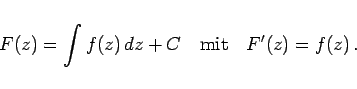
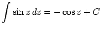
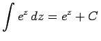

Inhalt Index DeskTop Bronstein

 Funktionentheorie Integration im Komplexen Bestimmtes und unbestimmtes Integral Definition des Integrals im Komplexen
Funktionentheorie Integration im Komplexen Bestimmtes und unbestimmtes Integral Definition des Integrals im Komplexen


Ist das bestimmte Integral vom Integrationsweg unabhängig, so gilt
|  | (14.34) |
Dabei ist C eine im allgemeinen komplexe Integrationskonstante. Die Funktion F(z) wird unbestimmtes komplexes Integral genannt.
Die unbestimmten Integrale der elementaren Funktionen einer komplexen Veränderlichen werden nach den gleichen Formeln berechnet wie die Integrale der entsprechenden Elementarfunktionen einer reellen Veränderlichen.
| Beispiel A |
|
. |
| Beispiel B |
|
. |